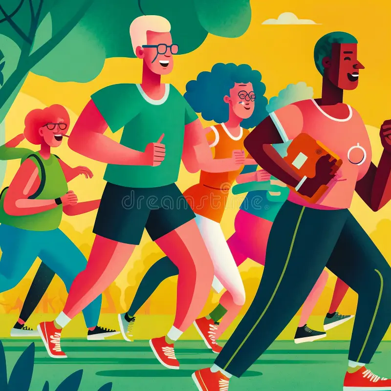

Health and Well-Being

Health and well-being are essential components of human development and are foundational for sustainable growth. The Sustainable Development Goals (SDGs) highlight the significance of ensuring healthy lives and promoting well-being for all at all ages. Despite global progress, millions still lack access to quality healthcare, nutritious food, and essential medicines. The challenges of communicable and non-communicable diseases, mental health issues, and the impacts of pandemics further complicate the landscape. By prioritizing health and well-being, we can foster resilient communities, enhance productivity, and improve the quality of life for everyone.